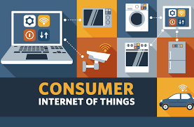
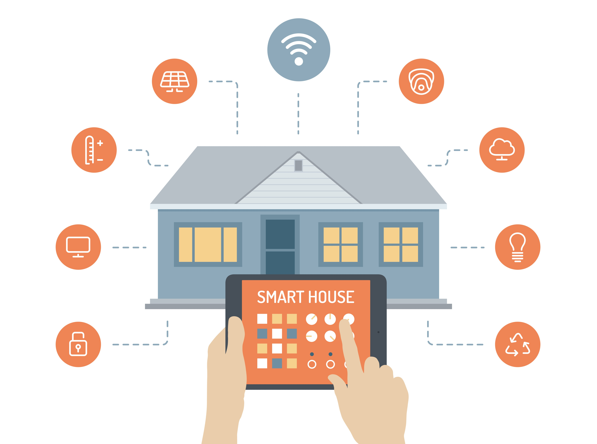
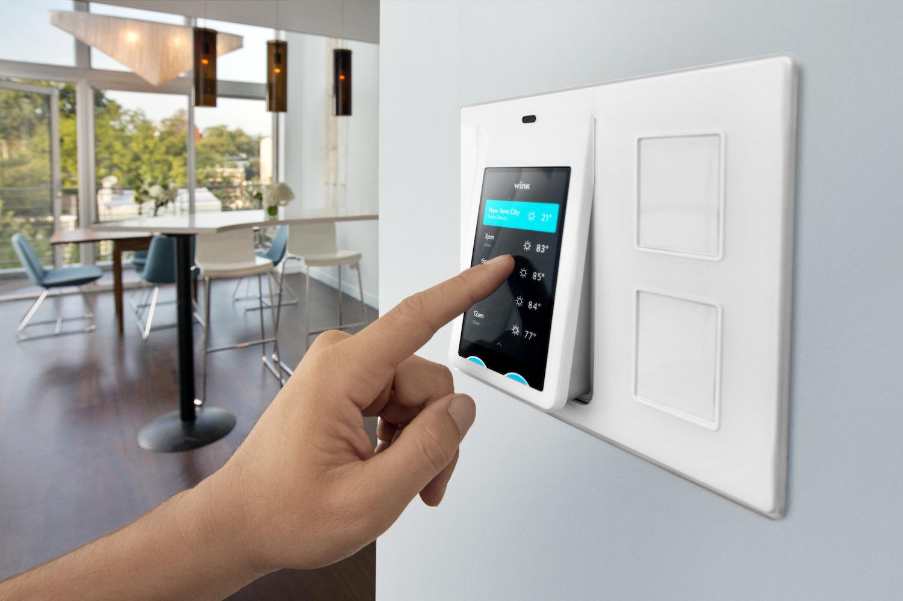
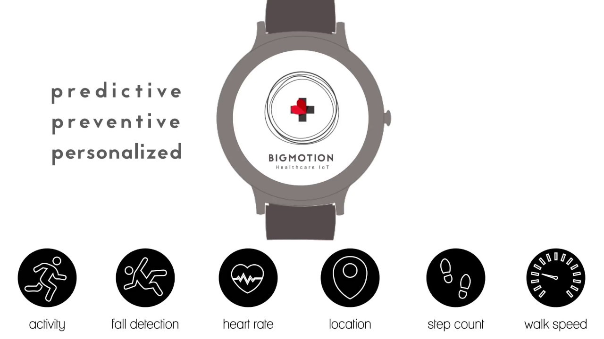

internet of things applications:
The extensive set of applications for IoT devices[21] is often divided into consumer, commercial, industrial, and infrastructure spaces.
Consumer applications
A growing portion of IoT devices are created for consumer use, including connected vehicles, home automation, wearable technology, connected health, and appliances with remote monitoring capabilities
Smart home
IoT devices are a part of the larger concept of home automation, which can include lighting, heating and air conditioning, media and security systems and camera systems. Long-term benefits could include energy savings by automatically ensuring lights and electronics are turned off or by making the residents in the home aware of usage
A smart home or automated home could be based on a platform or hubs that control smart devices and appliances. For instance, using Apple's HomeKit, manufacturers can have their home products and accessories controlled by an application in iOS devices such as the iPhone and the Apple Watch. This could be a dedicated app or iOS native applications such as Siri. This can be demonstrated in the case of Lenovo's Smart Home Essentials, which is a line of smart home devices that are controlled through Apple's Home app or Siri without the need for a Wi-Fi bridge.There are also dedicated smart home hubs that are offered as standalone platforms to connect different smart home products and these include the Amazon Echo, Google Home, Apple's HomePod, and Samsung's SmartThings Hub. In addition to the commercial systems, there are many non-proprietary, open source ecosystems; including Home Assistant, OpenHAB and Domoticz.
Elder care
One key application of a smart home is to provide assistance for those with disabilities and elderly individuals. These home systems use assistive technology to accommodate an owner's specific disabilities. Voice control can assist users with sight and mobility limitations while alert systems can be connected directly to cochlear implants worn by hearing-impaired users. They can also be equipped with additional safety features. These features can include sensors that monitor for medical emergencies such as falls or seizures. Smart home technology applied in this way can provide users with more freedom and a higher quality of life. The term "Enterprise IoT" refers to devices used in business and corporate settings. By 2019, it is estimated that the EIoT will account for 9.1 billion devices.



